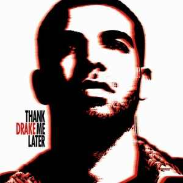

Early Life
Aubrey Drake Graham was born on October 24, 1986, in Toronto, Ontario. His father, Dennis Graham, is African-American and a practicing Catholic from Memphis, Tennessee, who worked as a drummer, performing alongside country musician Jerry Lee Lewis.His mother, Sandra "Sandi" Graham (née Sher), is a Canadian, from an Ashkenazi Jewish family, who worked as an English teacher and florist.Dennis Graham performed at Club Bluenote in Toronto, where he met Sandra Sher, who was in attendance.sDrake is a dual citizen of the United States and Canada, having American citizenship due to his American father.In his youth, he attended a Jewish day school, and became a bar mitzvah.
Aubrey Drake Graham was born on October 24, 1986, in Toronto, Ontario. His father, Dennis Graham, is African-American and a practicing Catholic from Memphis, Tennessee, who worked as a drummer, performing alongside country musician Jerry Lee Lewis.His mother, Sandra "Sandi" Graham (née Sher), is a Canadian, from an Ashkenazi Jewish family, who worked as an English teacher and florist.Dennis Graham performed at Club Bluenote in Toronto, where he met Sandra Sher, who was in attendance.Drake is a dual citizen of the United States and Canada, having American citizenship due to his American father.In his youth, he attended a Jewish day school, and became a bar mitzvah.
Drake was raised in two Toronto neighbourhoods. He lived on Weston Road in the city's working-class west end until grade six, playing minor hockey with the Weston Red Wings.He then moved to one of the city's affluent neighbourhoods, Forest Hill, in 2000.When asked about the move, Drake replied, "[We had] a half of a house we could live in. The other people had the top half, we had the bottom half. I lived in the basement, my mom lived on the first floor. It was not big, it was not luxurious. It was what we could afford."
At the age of 15, Drake, eager to begin his career as an actor, was introduced to a high school friend's father, an acting agent.The agent found Drake a role on the Canadian teen drama series Degrassi: The Next Generation. Drake portrayed Jimmy Brooks,a basketball star who became physically disabled after he was shot by a classmate. Drake reportedly disliked this character arc because of its apparent tokenism (his was one of the only black characters in the series), and he also believed it could negatively influence his standing as a rapper. Longtime series writer James Hurst said that Drake threatened legal action to redo the storyline, before ultimately agreeing to it.Madeleine Robinson, the executive director of the Californian non-profit organization Wheelchair 4 Kids, praised the storyline and Drake's performance, noting "he instilled confidence and representation" to disabled youth.When asked about his early acting career, Drake replied, "My mother was very sick. We were very poor, like broke. The only money I had coming in was [from] Canadian TV."[30] He appeared in a total of 100 episodes between 2001 and 2008.In 2010, Drake expressed interest in playing Barack Obama in a biopic, to which Obama responded with approval in an interview in 2020.
According to Degrassi series creators Stephen Stohn and Linda Schuyler, Drake regularly arrived late on set after spending nights recording music. To prevent this, Schuyler claimed Drake struck an agreement with the set's security guards to gain entry to the set after recording to be allowed to sleep in a dressing room.
Thank Me Later
Thank Me Later is the debut studio album by Canadian rapper and singer Drake. It was released on June 15, 2010, by Young Money Entertainment, Cash Money Records, and Universal Motown Records. Production for the album took place at various recording studios during 2009 to 2010 and was mostly produced by longtime collaborators 40 and Boi-1da. It features contributions from Alicia Keys, Timbaland, Swizz Beatz, Nicki Minaj, Lil Wayne, The-Dream, and Kanye West, among others.
Take Care

Take Care is the second studio album by Canadian rapper Drake. It was released on November 15, 2011, by Young Money Entertainment, Cash Money Records and Republic Records. The album features guest appearances from the Weeknd, Rihanna, Kendrick Lamar, Birdman, Nicki Minaj, Rick Ross, Lil Wayne, and André 3000. Alongside prominent production from the album's executive producers Drake and 40, further contributors include T-Minus, Chantal Kreviazuk, Boi-1da, Illangelo, Jamie xx, Supa Dups, Just Blaze, Chase N. Cashe, and Doc McKinney.
Nothing Was The Same

Nothing Was the Same is the third studio album by Canadian rapper Drake. It was released on September 24, 2013, through OVO Sound, Young Money Entertainment, Cash Money Records, and Republic Records. Work on the record began in 2012 and continued through 2013. As an executive producer, Drake enlisted collaborators such as 2 Chainz, Big Sean, Majid Jordan, Jay-Z, Jhené Aiko and Sampha for guest appearances on the album. The album's production was primarily handled by 40 and other OVO Sound producers; including Boi-1da, Mike Zombie, Nineteen85 and Detail
Scorpion
Scorpion is the fifth studio album by Canadian rapper and singer Drake. It was released on June 29, 2018, by Cash Money Records, Republic Records, and Young Money Entertainment. Scorpion is a double album consisting of 25 tracks. Its first disc is primarily hip hop, while its second disc has been described as R&B and pop. It was executively produced by Drake himself, alongside frequent collaborator 40 and manager Oliver El-Khatib. Scorpion features guest appearances from Jay-Z and Ty Dolla Sign, as well as posthumous appearances from Michael Jackson and Static Major.
Fake Love
"Fake Love" is a song by Canadian rapper Drake, released as the lead single from his 2017 album, More Life.It was co-written by Drake with Starrah, Vinylz, and Frank Dukes, while the latter two handled the song's production.The song was released for digital download on October 29, 2016, through Young Money Entertainment and Cash Money Records.